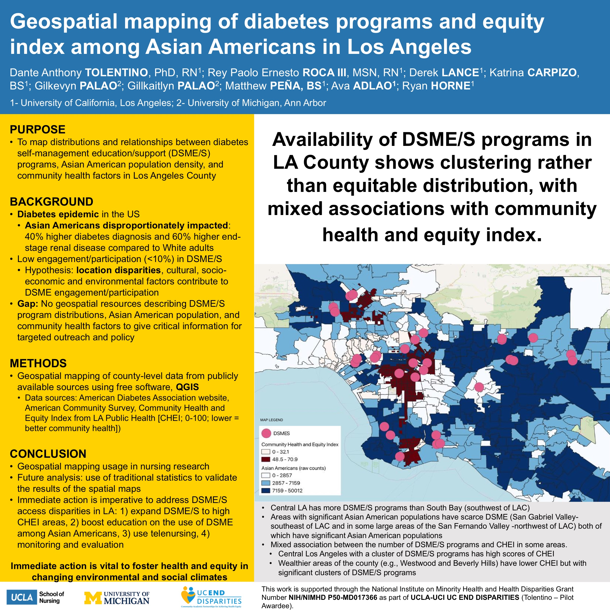

Poster · Western Institute of Nursing · 2024
Diabetes education programs in Los Angeles County cluster in some areas rather than spreading to where they are needed, which may leave Asian American communities underserved.
Diabetes hits Asian Americans hard, yet fewer than one in ten take part in diabetes self-management education and support programs. This study mapped where those programs are located across Los Angeles County alongside Asian American population density and community health measures. It found the programs cluster in certain areas rather than being spread out fairly, which can leave some communities without nearby support and can help guide where to focus outreach.
The team mapped county-level data from public sources (American Diabetes Association program listings, the American Community Survey, and the LA Community Health and Equity Index) using free QGIS software.
This is a descriptive mapping study; associations with community health were mixed, and the team notes that future work will add traditional statistics to validate the relationships.
Programs cluster in some areas instead of being distributed equitably.
Geospatial methods reveal gaps that tables of numbers can miss.
Maps can guide outreach and policy to underserved communities.
